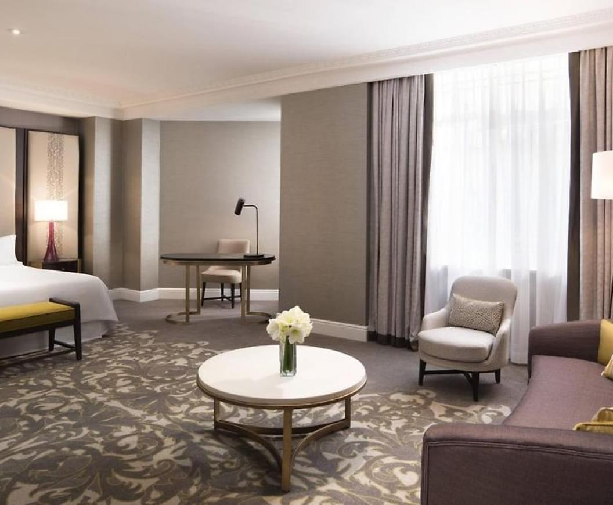
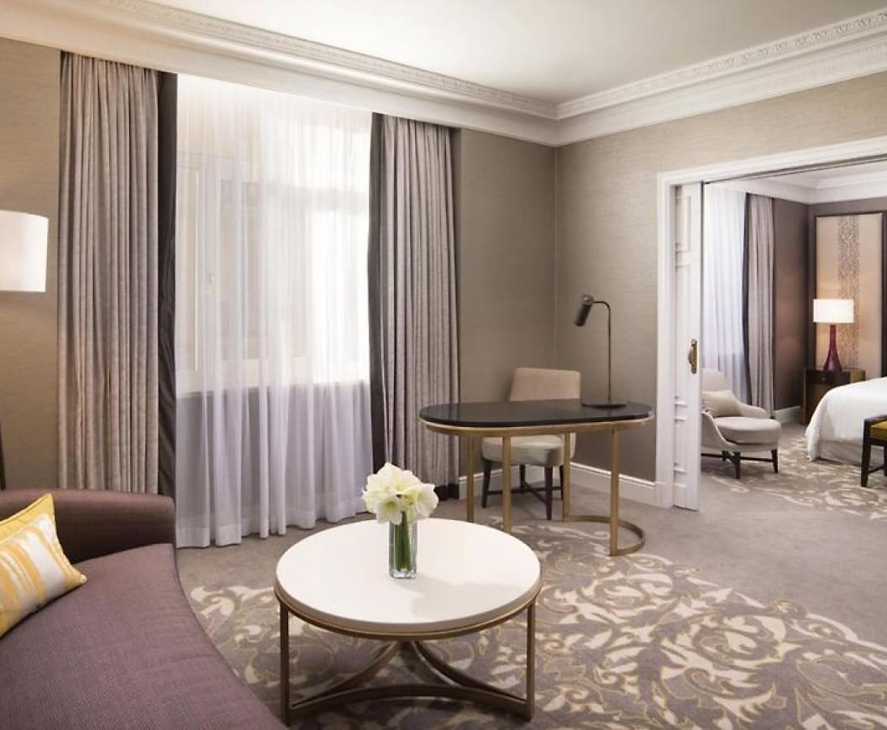
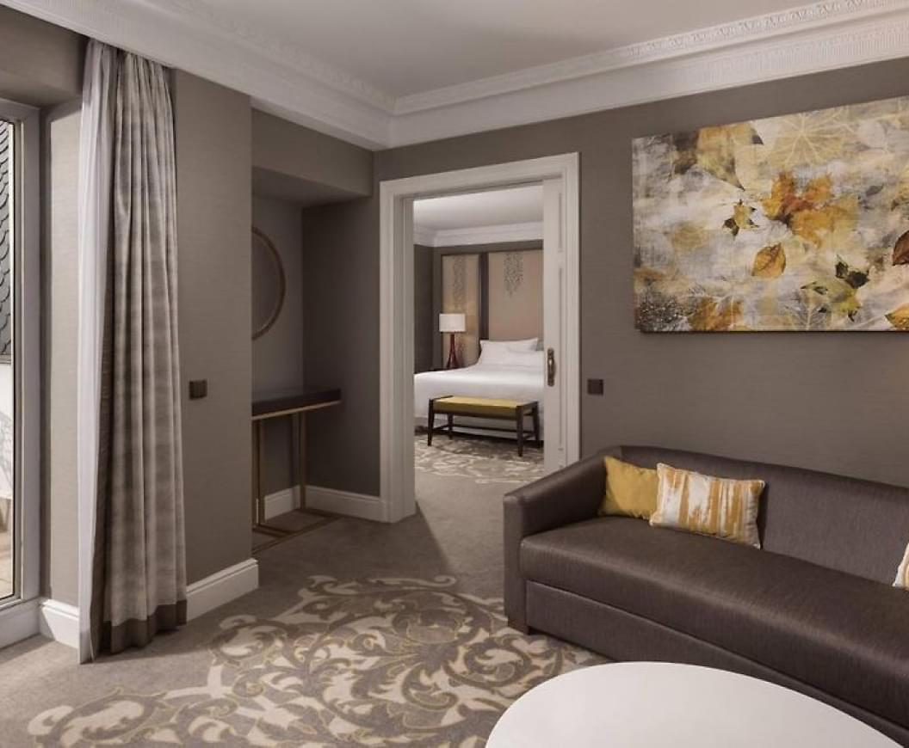
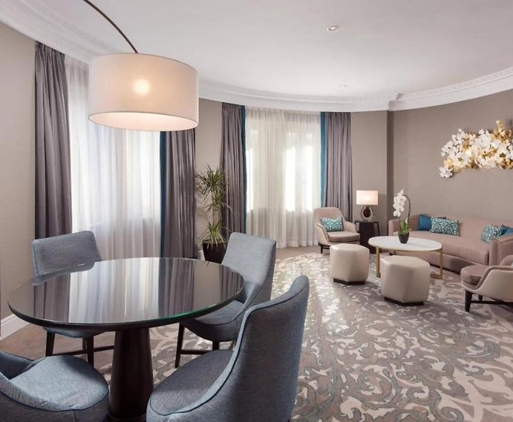

La Habitación Premium del Hotel The Westin Palace en España es una de las mejores y más lujosas opciones de alojamiento. Ubicado en el corazón de la ciudad, ofrece una hermosa vista de la Plaza Reina María Cristina y de las principales atracciones turísticas cercanas.
Esta habitación atrae con la gracia y la elegancia del interior, el diseño moderno y la abundancia de confort. Tiene un dormitorio acogedor con una cama grande, una amplia sala de estar donde los huéspedes pueden relajarse y disfrutar de la vista desde la ventana y un lujoso baño con ducha y bañera separadas.
Habitación ejecutiva


La Habitación Ejecutiva del Hotel The Westin Palace en España es una de las opciones de alojamiento más lujosas y prestigiosas. Combinando elegancia y comodidad, esta habitación ofrece una estadía inolvidable y condiciones ideales para un trabajo exitoso.
Un dormitorio espacioso con una cama de lujo y muebles elegantes crea una atmósfera de comodidad y tranquilidad. Una gran sala de estar con muebles tapizados y una mesa de negociación brinda la oportunidad de celebrar reuniones y negociaciones en un entorno de lujo. Además, la habitación cuenta con un área de trabajo independiente con un cómodo escritorio de trabajo e internet de alta velocidad.
El baño es un verdadero oasis de lujo y relajación. Cuenta con acabados de lujo, lavabos dobles, una amplia ducha a ras de suelo y una bañera profunda donde los huéspedes pueden relajarse y disfrutar de momentos de tranquilidad después de un largo día de trabajo.
Habitación de lujo


De Deluxe Room in The Westin Palace Hotel in Spanje is een van de beste en meest luxueuze accommodaties. Het originele ontwerp van deze kamer wordt op ideale wijze gecombineerd met voortreffelijk comfort en biedt een unieke sfeer van ontspanning en plezier.
Bij aankomst in de Deluxe kamer worden gasten begroet door een luxe slaapkamer met een comfortabel bed en prachtige meubels. Deze ruime en gezellige kamer biedt ideale omstandigheden voor ontspanning en creëert een sfeer van rust en ontspanning. De badkamer is groot en licht en heeft alles wat je nodig hebt, inclusief een apart bad, inloopdouche en luxe toiletartikelen.
De Deluxe kamer van The Westin Palace Hotel biedt een breed scala aan moderne voorzieningen, waaronder een flatscreen-tv, een minibar, WiFi en meer, zodat gasten kunnen genieten van het comfort en gemak van een 5-sterrenhotel. Bovendien hebben gasten toegang tot exclusieve diensten, waaronder 24-uursroomservice, wasservice en gratis toegang tot het fitnesscentrum van het hotel.